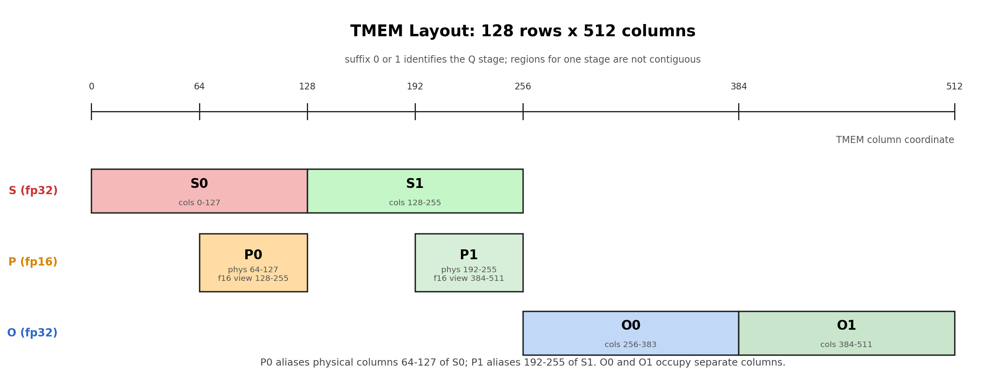
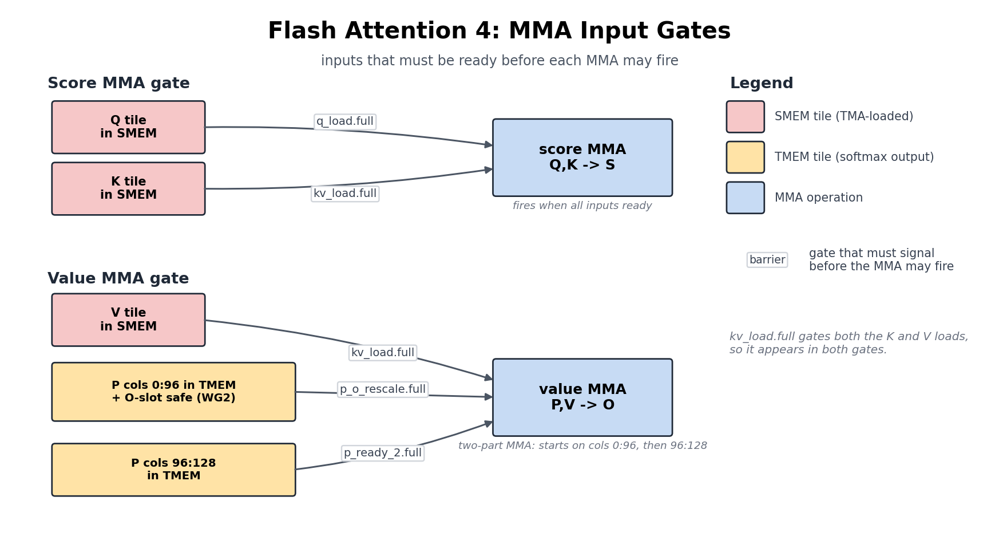
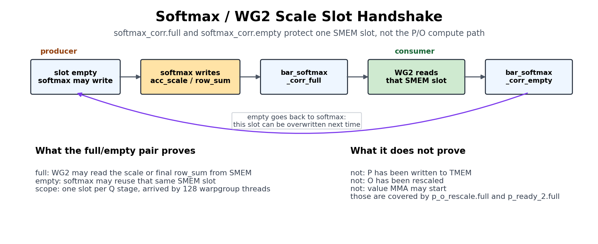
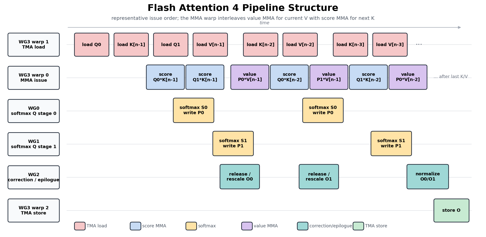

6. Flash Attention 4¶
We now move from GEMM to a more complex kernel: Flash Attention. It
still uses the same tile-primitive machinery as the GEMM chapters: TMA
tile movement, tcgen05 MMA, TMEM, warpgroup-local register tiles,
and explicit barriers. The extra complexity comes from the algorithm
between the two MMA phases: online softmax, masking, rescaling, and
final normalization.
This chapter keeps enough of the Flash Attention 4 algorithm to make the kernel readable, then focuses on how that algorithm is expressed in TIRX.
The easiest way to read the kernel is to follow the tile path. Q,
K, and V start as input tiles loaded from GMEM into SMEM. The
score MMA consumes Q and K to create the score tile S in
TMEM. Softmax turns S into a numerator tile P, and the value MMA
consumes P and V to update the output accumulator O. When
the running softmax maximum changes, the old O tile must be rescaled
before the next value MMA can accumulate into it. The sections below
first explain this path, then show how TIRX assigns the work to
warpgroups and connects the stages.
6.1. Algorithm Shape¶
For one query block, Flash Attention computes:
without materializing the full attention matrix — at seq=4096 the full
S = QKᵀ would be ~16M elements per head (~64 MB in fp32), far past
SMEM or the single 128×512 TMEM region. So the kernel streams K/V blocks
and keeps three per-row running states:
row_max: the maximum score seen so far.row_sum: the running denominator of softmax.O: the running output accumulator.
For each K/V block, the update is:
S = Q_block @ K_block.T
m_new = max(row_max, rowmax(S))
scale = exp((row_max - m_new) / sqrt(d))
P = exp((S - m_new) / sqrt(d))
row_sum = row_sum * scale + rowsum(P)
O = O * scale + P @ V_block
row_max = m_new
Here P is not the final normalized attention matrix. It is the
softmax numerator tile for the current K/V block. After all K/V blocks,
the kernel writes O / row_sum.
For TIRX, the key question is not only what the algorithm computes, but
where each tile lives while the kernel runs. S, P, and O are
tile values:
Sis the score tile. The score MMA writes it to TMEM.Pis the softmax numerator tile. Softmax readsSfrom TMEM into registers, computesP = exp((S - m_new) / sqrt(d)), and writesPback to TMEM.Ois the output accumulator tile. The value MMA readsPfrom TMEM andVfrom SMEM, then accumulates intoOin TMEM.
When row_max changes, the old O tile has to be rescaled before
the next value MMA accumulates into it. That rescaling is also a tile
operation: read O from TMEM, multiply in registers, and write O
back to TMEM.
6.2. Tile-Primitive Graph¶
Start with the short version. For one K/V block, the kernel follows this tile path:
Q, K, V in GMEM
-> Q, K, V in SMEM by TMA load
-> S in TMEM by score MMA: QK^T
-> P in TMEM by softmax numerator: TMEM -> RF -> TMEM
-> O in TMEM by value MMA: P V
-> O in GMEM by normalization, SMEM staging, and TMA store
This is the FA4 version of the GEMM data path. GEMM has one repeated MMA chain. FA4 has two MMA phases, and the middle of the chain is softmax.
The full graph below expands that short path into producer-consumer edges:
Stage |
Tile movement or compute |
TIRX primitive |
Hardware path |
|---|---|---|---|
Load Q/K/V |
GMEM tiles -> SMEM tiles |
|
TMA load |
Score MMA |
Q in SMEM and K in SMEM ->
score tile |
|
|
Softmax read |
|
|
|
Softmax write |
numerator tile |
|
TMEM store, followed
by
|
Value MMA |
|
|
|
Correction |
|
TMEM readback, register multiply, TMEM store |
|
Epilogue |
final |
TMEM readback, |
|
The middle steps are still tile operations. Softmax reads a score tile
from TMEM into warpgroup registers, does row-wise math, and writes a
P tile back to TMEM. Correction reads an O tile from TMEM,
rescales it, and writes it back.
Try with your agent: Ask it to trace only the short path above. For each arrow, name the producer role, consumer role, source tile, destination tile, and hardware path. Then ask which arrows did not exist in the GEMM chapters.
6.3. Warp Roles and Scopes¶
Each CTA in this FA4 kernel has 4 warpgroups, 512 threads total. The split is easier to read as two groups:
WG3 drives the hardware engines: TMA load, MMA, and TMA store.
WG0, WG1, and WG2 do the register-heavy work between hardware operations: softmax, correction, and epilogue.
The exact role table is:
Owner |
Role |
What it does |
|---|---|---|
WG3, warp 1 |
TMA load |
Loads Q, K, and V tiles from GMEM to SMEM |
WG3, warp 0 |
MMA |
Issues both score MMA and value MMA |
WG3, warp 2 |
TMA store |
Stores final O tiles from SMEM to GMEM |
WG0 |
Softmax for Q stage 0 |
Reads S from TMEM, computes P, writes P to TMEM |
WG1 |
Softmax for Q stage 1 |
Same work for the second Q pipeline stage |
WG2 |
Correction and epilogue |
Rescales O in TMEM, normalizes, stages output |
The two Q stages are the two entries in the Q pipeline. WG0 handles one stage while WG1 handles the other. They are not different attention heads; they are two pipeline slots for different Q tiles.
The code selects these roles with symbolic coordinates:
wg_id = Tx.warpgroup_id([4])
warp_id = Tx.warp_id_in_wg([4])
When reading the code, first identify the role branch. That branch tells you which execution team owns the tile primitive inside it:
WG3 warp 1 starts TMA load commands. One elected lane issues the copy, and the TMA engine moves the tile.
WG3 warp 0 issues the
tcgen05.mmainstructions.WG0 and WG1 run softmax under full warpgroup scope.
WG2 runs correction and epilogue work under full warpgroup scope.
All MMA instructions are issued from WG3 warp 0. WG0 and WG1 do not
issue MMA. They consume the score tile, run softmax, and write the P
tile back to TMEM.
This matters for barriers. s_ready connects score MMA to softmax.
p_o_rescale connects softmax and correction back to the value MMA.
6.4. Reading the Fragments¶
The code fragments shown in this chapter are pulled from
flash_attention4.py, so a few names come from the surrounding kernel
that isn’t shown here. The standard or self-describing ones — wg_id,
warp_id, BLK_M/BLK_N, HEAD_DIM, kv_stage, the
SMEM_PIPE_DEPTH_* / TMEM_PIPE_DEPTH depths,
should_accumulate, and CTA_GROUP (1 here) — are spelled out
where they first matter in the sections below. The rest are worth a
one-line gloss; you do not need to memorize them, just look one up when
a fragment uses it:
Name |
Meaning |
|---|---|
|
Q pipeline stage, 0 or 1 — which Q tile
slot ( |
|
score/output tile width in TMEM columns (128) |
|
MMA inner-K step in |
|
split point of the |
|
WG2 per-row flag: whether the old |
|
when the scaled row-max change is small
enough, |
|
the softmax scale in log2 units,
|
|
per-row rescale factor softmax passes to WG2 through the SMEM mailbox |
|
column range of the 32-wide softmax chunk being read / written |
6.5. The Two MMA Phases¶
For each streamed K/V tile, Flash Attention runs two MMA phases with softmax in between:
Q, K -> score MMA -> S
S -> softmax -> P
P, V -> value MMA -> O
The first MMA produces attention scores. The second MMA consumes the
softmax numerator tile and updates the output accumulator. Final
normalization by row_sum happens in the epilogue.
Each tile op below gets the same scope / layout / dispatch card as the GEMM steps, with one extra line — Handoff — naming the barrier(s) that pass the tile to the next role.
The kernel does not index raw TMEM columns. It carves the single TMEM
allocation into per-stage tile views — S_region, P_region, and
O_region — and indexes them by pipeline stage
(S_region[q_stage], O_region[i_q],
P_region[i_q, 0:K_SPLIT]). Those region objects are defined with
Tx.TMEMStages in the TMEM Layout and
Reuse section below; read the snippets here
knowing that each region maps to a slice of the same physical TMEM.
6.5.1. Score MMA¶
The score MMA computes:
and writes the 128 x 128 score tile to TMEM:
with Tx.warp():
Tx.gemm_async(
S_region[q_stage],
Q_smem[q_stage, 0:BLK_M, 0:HEAD_DIM],
K_smem[kv_stage, 0:BLK_N, 0:HEAD_DIM],
dispatch="tcgen05",
cta_group=CTA_GROUP,
)
if Tx.ptx.elect_sync():
s_ready.arrive(q_stage)
Read it as a tile-primitive readout, the same four questions the GEMM chapters asked:
Tile-primitive readout — Score MMA - Scope: WG3 warp 0 issues it; one elected lane arrives
s_ready. - Layout: Q, K in SMEM →Sin TMEM (S_region[q_stage]). - Dispatch:tcgen05. - Handoff:s_ready(→ softmax).
The elected thread arrival on s_ready says this score tile is ready
for the softmax warpgroup.
6.5.2. Softmax Between MMAs¶
Tile-primitive readout — Softmax - Scope: WG0 (Q stage 0) / WG1 (Q stage 1), full warpgroup. - Layout:
Sin TMEM → registers →Pin fp16 TMEM (P_region[wg_id]). - Dispatch:tcgen05.ldto read, TMEM store to write; row-wise math in registers between them. - Handoff: waitss_ready; arrivesp_o_rescale(first 96 columns) andp_ready_2(last 32).
Softmax is the part that makes FA4 different from GEMM. WG0/WG1 wait for the score tile, then read it from TMEM in register chunks:
Tx.copy_async(
s_chunk[:, chunk_start : chunk_end],
S_region[wg_id, chunk_start : chunk_end],
)
This is a TMEM-to-RF tile read under warpgroup scope. After the read, the softmax warpgroup does three things:
computes the row max and row sum,
computes the softmax numerator tile
P,writes
Pback to TMEM as fp16.
The writeback looks like:
Tx.copy_async(
P_region[wg_id, p_start : p_end],
p_chunk[:, p_start : p_end],
)
The writeback matters because the value MMA needs P as a tile
operand. It cannot consume P as unrelated per-thread scalar
registers. In this kernel, the MMA-readable form of P is
P_region, which is a view over the fp16 TMEM alias tmem_as_f16.
6.5.3. Value MMA¶
The value MMA computes:
Here O has already been initialized or rescaled for this K/V block.
The A operand is P in TMEM, the B operand is V in SMEM, and the
output accumulator is O in TMEM:
with Tx.warp():
Tx.gemm_async(
O_region[i_q],
P_region[i_q, 0:K_SPLIT],
V_smem[kv_stage, 0:K_SPLIT, 0:HEAD_DIM],
transB=True,
accum=should_accumulate,
dispatch="tcgen05",
cta_group=CTA_GROUP,
)
**Tile-primitive readout — Value MMA** - Scope: WG3 warp 0. - Layout:
``P`` in TMEM + V in SMEM → ``O`` in TMEM (``O_region[i_q]``). -
Dispatch: ``tcgen05`` with a TMEM operand. - Handoff: waits
``p_o_rescale``, ``p_ready_2``, ``kv_load.full``; arrives ``o_ready``
(→ epilogue).
This is the main hardware difference from the score MMA:
Score MMA reads both operands from SMEM: Q and K.
Value MMA reads one operand from TMEM:
P.Value MMA reads the other operand from SMEM: V.
The result accumulates into
Oin TMEM.
accum=should_accumulate controls whether this K/V tile initializes
the output accumulator or adds into the existing O tile.
The value MMA is split into a 96 + 32 schedule:
Softmax writes
Pin four 32-column chunks.After the first three chunks are ready, the value MMA starts on the first 96 columns of
Pand the matching rows ofV.The final 32 columns wait for
p_ready_2.A second MMA consumes that final chunk and finishes the tile.
Without the split, the value MMA would idle until all four 32-column
P chunks are computed and stored. Starting on the first three (96
columns) lets the last chunk’s exp and TMEM write overlap a 96-wide
MMA instead of leaving the Tensor Core idle.
6.6. TMEM Layout and Reuse¶
The kernel uses one 128 x 512 TMEM allocation:

Fig. 6.6.1 TMEM Layout¶
The figure is easiest to read as a set of tile slots:
Score slots hold
S = QK^T.Numerator slots hold the
Ptile after the softmax exponentiation step.Output slots hold the fp32
Oaccumulator.
These are not independent buffers in global memory. They are regions of
the same TMEM allocation. Sharing is forced, not chosen: with Q-pipeline
depth 2 the two S slots (2 × MMA_N = 128) and two O slots (2 ×
128) already fill all 512 fp32 columns of the region, so P has no
columns of its own — it must alias the same bytes through the fp16 view.
The schedule is valid because each region is reused only after the
previous consumer has finished. That is why barriers are part of the
layout story: TMEM reuse is safe only when the producer-consumer handoff
is complete.
The kernel allocates TMEM through a Tx.TMEMPool. It takes one fp32
view (tmem) for the score and output accumulators, then moves the
pool base back to 0 and takes a second, fp16 view (tmem_as_f16) that
aliases the same physical TMEM:
tmem_pool = Tx.TMEMPool(pool, total_cols=N_COLS_TMEM, cta_group=CTA_GROUP, tmem_addr=tmem_addr)
tmem = tmem_pool.alloc((128, N_COLS_TMEM), "float32")
tmem_pool.move_base_to(0)
tmem_as_f16 = tmem_pool.alloc((128, N_COLS_TMEM * 2), "float16")
tmem_pool.commit()
The fp16 view has twice as many indexable columns over the same bytes.
The S, P, and O tile slots are then carved out as staged
regions with Tx.TMEMStages, so the compute code can index them by
pipeline stage instead of computing raw TMEM columns:
S_region = Tx.TMEMStages(tmem, col_start=0, width=MMA_N, stages=SMEM_PIPE_DEPTH_Q, stride=MMA_N)
O_region = Tx.TMEMStages(tmem, col_start=MMA_N * SMEM_PIPE_DEPTH_Q, width=MMA_N, stages=SMEM_PIPE_DEPTH_Q, stride=MMA_N)
P_region = Tx.TMEMStages(tmem_as_f16, col_start=MMA_N, width=BLK_N, stages=SMEM_PIPE_DEPTH_Q, stride=MMA_N * 2)
S_region and O_region live in the fp32 tmem; P_region
lives in the fp16 tmem_as_f16, so its col_start and stride
are in fp16-view columns (hence the * 2 relative to the fp32
stride). The compute code then writes S_region[q_stage], reads
S_region[wg_id, ...], writes P_region[wg_id, ...], and
accumulates into O_region[i_q] — no manual column arithmetic.
Try with your agent: Ask it to explain the fp32 (tmem) and fp16
(tmem_as_f16) views in this FA4 kernel. Which physical TMEM regions
hold S, P, and O, why does P_region’s stride use
MMA_N * 2, and which consumers must finish before each region can be
reused?
6.7. How Barriers Connect the Roles¶
The barrier graph is the hardest part of the kernel. Do not try to memorize the full table first. Start with the data-ready handoffs on the main compute path:
Handoff |
Meaning |
|---|---|
TMA load -> score/value MMA |
Q, K, or V has arrived in SMEM and can feed MMA |
score MMA -> softmax |
|
softmax/correction -> value MMA |
|
value MMA -> epilogue |
final |
epilogue -> TMA store |
|
The rest of the barriers are mostly pipeline bookkeeping: they release SMEM, TMEM, or staging buffers so another role can reuse them.
Read each barrier as a tile handoff: which role produced data, which role consumes it, and which buffer becomes reusable afterward.

Fig. 6.7.1 Flash Attention 4 MMA Input Gates¶
This diagram is about correctness gates, not scheduling. It shows what
must be ready before each MMA phase may run. Score MMA waits for Q and K
in SMEM, then produces S. Value MMA waits for V in SMEM, the P
tile from softmax, and an O slot that WG2 has either released or
rescaled. The softmax-to-value gate is split because value MMA can start
after the first 96 columns of P, while the final 32 columns are
released by p_ready_2.
The softmax/correction handoff needs a different view. It uses a small
SMEM slot as a mailbox between the softmax warpgroup and WG2. That
mailbox carries either acc_scale during the K/V loop or final
row_sum during the epilogue. The full and empty barriers
protect that mailbox slot:

Fig. 6.7.2 Flash Attention 4 Softmax Scale-Slot Handshake¶
Read softmax_corr.full and softmax_corr.empty as a
producer-consumer pair:
Softmax waits for
softmax_corr.emptybefore reusing the scale/sum slot.Softmax writes
acc_scaleor finalrow_suminto that slot.Softmax arrives on
softmax_corr.full.WG2 waits on
softmax_corr.full, then reads the slot.WG2 arrives on
softmax_corr.empty.The softmax warpgroup may reuse the slot in the next phase.
That is all softmax_corr.empty means: WG2 has consumed the SMEM
scale/sum slot. It does not mean P is ready, and it does not mean
value MMA may start. The value-MMA gate is p_o_rescale: the first 96
columns of P are ready, and WG2 has made the O slot safe to
accumulate into.
The full barrier list is still useful as a reference:
Barrier |
Producer -> consumer |
What becomes safe |
|---|---|---|
|
TMA load -> score MMA |
Q SMEM tile can feed MMA |
|
all score MMAs for this Q stage -> TMA load |
Q SMEM stage can be reused for the next task |
|
TMA load -> score/value MMA |
K or V SMEM tile can feed MMA |
|
score/value MMA -> TMA load |
K/V SMEM stage can be reused |
|
score MMA -> softmax |
S TMEM tile can be read |
|
softmax + WG2 -> value MMA |
first 96 columns of P are in TMEM, and the O slot is safe for value MMA |
|
softmax -> value MMA |
final quarter of P is in TMEM |
|
value MMA -> epilogue |
final O accumulator is ready |
|
softmax -> WG2 |
|
|
WG2 -> softmax |
the same SMEM mailbox slot can be reused after WG2 reads it |
|
epilogue -> TMA store |
O_smem is ready to store |
|
TMA store -> epilogue |
O_smem stage can be reused |
The barrier type follows the producer:
TMA loads use
TMABar, because completion is byte-counted by the TMA engine.MMA completion uses
TCGen05Bar, becausetcgen05.commitsignals the completion group.Pure thread-to-thread handoffs use
MBarrier, where the participating threads arrive explicitly.
Two barriers split the softmax-to-value handoff. p_o_rescale lets
the value MMA start once the first 96 columns of P are written and
the O tile is safe to accumulate into. On the first K/V block, WG2
pre-arrives this barrier because there is no old O to rescale. On
later K/V blocks, WG2 arrives after it has either skipped an unnecessary
rescale or finished rescaling the old O. The rescale is skipped when
the per-row scale is effectively 1.0 — softmax clamps acc_scale to
exactly 1.0 when the row max barely moves, specifically when the
log2-scaled max delta (m_old - m_new) * scale_log2 stays within
rescale_threshold so the exp2 rescale factor rounds to 1.0, and
WG2 reduces should_rescale across the warpgroup with any_sync,
so it only touches O when at least one row needs it — the rescale it
skips is a full TMEM → RF → TMEM read-modify-write over the whole O
accumulator, wasted work once the max has stabilized and the scale
rounds to 1.0. p_ready_2 releases the last 32 columns of P. This
matches the 96 + 32 value-MMA schedule from the previous section.
Compared with GEMM, the new barriers are the ones around softmax:
s_ready, p_o_rescale, p_ready_2, and the softmax/correction
pair. They exist because the score MMA and value MMA are separated by
register math, TMEM rewrites, and output rescaling.
Try with your agent: Ask it to trace one K/V block through
s_ready, p_o_rescale, p_ready_2, and o_ready. For each
barrier, ask who waits, who arrives, what tile becomes safe to read, and
what storage can be reused afterward.
6.8. Pipelining Structure¶
The previous section answered: what must be ready before a role may consume a tile? This section answers a different question: which roles can run at the same time?
The kernel does not have one single pipeline depth. It has separate rings for the tile streams that move at different rates:
Q pipeline depth 2: one CTA works on two Q stages. WG0 handles one stage, and WG1 handles the other.
KV pipeline depth 3: K and V blocks stream through the inner loop while the same Q stages are reused.
TMEM pipeline depth 2: each Q stage has its own S/P/O TMEM slots, and those slots are reused after the matching barriers fire.

Fig. 6.8.1 Flash Attention 4 Pipeline Structure¶
This figure is a timeline, not a barrier graph. Use it to see which role is active at roughly the same time; use the previous barrier-flow figure to check the exact producer-consumer waits.
The rows in the figure match the code’s role branches:
WG3 warp 1 issues TMA loads.
WG3 warp 0 issues both score MMA and value MMA.
WG0 and WG1 run softmax for the two Q stages.
WG2 releases or rescales
O, then later normalizes the final output.WG3 warp 2 issues the TMA store.
Read the figure left to right as a representative pipeline wave. The
load warp first loads Q0, K[n-1], Q1, and V[n-1], then
keeps streaming lower-index K/V blocks. The MMA warp first issues score
MMAs to produce S0 and S1. WG0 and WG1 turn those score tiles
into P0 and P1.
After the first two score MMAs, the MMA warp does not switch into a
separate value-only phase. It interleaves the two kinds of MMA: value
MMA for the current V block, then score MMA for the next K
block. A typical sequence is:
score Q0*K[n-1]
score Q1*K[n-1]
value P0*V[n-1]
score Q0*K[n-2]
value P1*V[n-1]
score Q1*K[n-2]
value P0*V[n-2]
...
That interleaving is why the score, softmax, correction, and value rows overlap in the figure.
The WG2 row says release / rescale because the first K/V block has
no old O to rescale, but WG2 still participates in the handoff that
lets value MMA proceed. On later K/V blocks, WG2 may actually rescale
the old O tile before value MMA accumulates into it. Normalization
and TMA store happen only after the last K/V block for the current
attention task.
This is why a single GEMM-style pipeline is not enough. Q, K/V, and TMEM
slots advance on different schedules. TIRX keeps those schedules visible
as separate tile buffers, PipelineState cursors, and barrier phases
instead of hiding the whole attention kernel behind one monolithic
primitive.
6.9. Rescaling and Writeback¶
Online softmax can change the per-row maximum after each new score tile.
When that happens, the output accumulated from earlier K/V blocks is in
the old scale and must be rescaled before the next value MMA adds into
it — each earlier term is too large by exp(m_new - m_old), so
skipping the rescale over-weights the earlier blocks and gives the wrong
output. The correction is itself a tile operation (TMEM → registers →
TMEM):
Softmax computes the per-row scale and writes it to SMEM. WG2 waits for
that scale through softmax_corr.full, reads the current O
accumulator from TMEM, multiplies by the per-row scale, and writes O
back to TMEM:
RESCALE_TILE = Tx.meta_var(16)
o_row = Tx.wg_reg_tile(RESCALE_TILE)
Tx.copy_async(o_row, O_region[i_q, d_start : d_start + RESCALE_TILE])
Tx.mul(o_row, o_row, acc_scale)
Tx.copy_async(O_region[i_q, d_start : d_start + RESCALE_TILE], o_row)
Tx.ptx.tcgen05.wait.st()
This is not scalar bookkeeping. It is another TMEM -> RF -> TMEM tile operation:
Tile-primitive readout — Correction (rescale) - Scope: WG2, full warpgroup. - Layout:
Oin TMEM → registers →Oin TMEM (O_region[i_q]). - Dispatch:tcgen05.ldto read, TMEM store to write; register multiply between them. - Handoff: waitssoftmax_corr.full; arrivesp_o_rescale(→ value MMA) andsoftmax_corr.empty(→ softmax).
The synchronization is:
Softmax writes the scale value to SMEM.
WG2 waits on
softmax_corr.full.WG2 rescales
Oin TMEM.WG2 arrives on
p_o_rescale.WG3’s value MMA can now consume
Pand accumulate into the rescaledOtile.
After WG2 reads the scale value, softmax_corr.empty releases that
SMEM slot so the softmax warpgroup can reuse it.
At the end of the K/V loop, WG2 switches from correction to epilogue. It
waits for the final row_sum and o_ready, reads the final O
accumulator from TMEM, multiplies by 1 / row_sum, casts to fp16, and
writes O_smem. WG3’s TMA store warp then moves O_smem back to
GMEM.
The current kernel computes the forward output only. A training forward
kernel would normally also store log-sum-exp for backward. Note that
this kernel keeps row_max as the maximum of the raw (unscaled)
QK^T scores, while row_sum accumulates
exp((S - row_max) / sqrt(d)), so the 1/\sqrt{d} factor must be
applied to row_max when forming the natural-log LSE:
This implementation is forward-output only and does not write LSE.
6.10. Causal Masking¶
Causal attention changes which score elements are valid: a query position may only attend to keys at or before that position. In this kernel, causal handling appears in two places.
First, the K/V loop can stop early for each Q block.
get_n_block_max(...) computes the last K/V block that this Q block
may need, so the kernel does not load or compute K/V blocks that are
entirely above the causal diagonal.
Second, blocks that cross the diagonal still run score MMA, but the
softmax stage masks invalid columns before exponentiation. For each row,
the code computes a column limit and sets scores beyond that limit to
-inf in registers:
mask = (1 << col_limit) - 1
in_bound = mask & (1 << i)
s_chunk[c] = s_chunk[c] if in_bound else -inf
The real implementation applies this in chunks with mask_r2p(...),
which builds a bit mask instead of branching on every score element.
Blocks fully below the diagonal do not need this register mask; blocks
crossing the diagonal do.
From the tile-primitive point of view, causal mode does not replace the
main data path. It changes the K/V trip count and inserts masking into
the RF softmax step between score MMA and P writeback.
6.11. GQA Support¶
Grouped Query Attention shares one K/V head across multiple query heads.
For a scheduled kv_head_idx, the kernel processes the corresponding
group of query heads together:
GQA_RATIO = num_qo_heads // num_kv_heads
SEQ_Q_PER_TILE = BLK_M // GQA_RATIO
For GQA_RATIO=4, the 128 rows of the Q tile represent 32 sequence
positions times 4 query heads. The packed row mapping is:
seq_pos = row // GQA_RATIO
q_head = row % GQA_RATIO
The Q TMA load uses a 3D view to describe that packing. The source is
Q[batch, seq, qo_head, dim], while the destination is the same
physical SMEM tile that the score MMA reads as a flat 128 x HEAD_DIM
operand:
Q_smem_3d = Q_smem.view(SMEM_PIPE_DEPTH_Q, SEQ_Q_PER_TILE, GQA_RATIO, HEAD_DIM)
Tx.copy_async(
Q_smem_3d[i_q, :, :, :],
Q[batch_idx,
m_start : m_start + SEQ_Q_PER_TILE,
kv_head_idx * GQA_RATIO : (kv_head_idx + 1) * GQA_RATIO,
:],
**tma_copy_q,
)
K and V are not expanded in memory. The same K/V tile for
kv_head_idx is reused by all GQA_RATIO query heads packed into
the Q rows.
The output side mirrors the input side. After the epilogue, the kernel
uses a matching 3D view to store the packed rows back to
O[batch, seq, qo_head, dim].
So GQA mainly changes the interpretation at the Q load and O store
boundaries. Inside the compute path, the score MMA still sees a regular
128 x HEAD_DIM Q tile, and the rest of the tile-primitive graph
stays the same.
6.12. Tile Scheduling¶
The scheduler maps each CTA to a (batch, kv_head, m_block) attention
task. The kernel has two scheduling modes:
Non-causal mode uses
FlashAttentionLinearScheduler. The launch uses a fixed pool of CTAs, and each CTA advances bynum_ctasto process multiple tasks.Causal mode uses
FlashAttentionLPTScheduler. Causal masking makes work per task uneven — a Q block near the start attends to ~1 K/V block, one near the end to all of them — so the longest-processing-time scheduler front-loads the heavy blocks to balance CTA finish times (and keeps nearby batch/head tasks together for L2 locality).
The code interface has the same shape in both modes:
while scheduler.valid():
m_block_idx = scheduler.m_block_idx
batch_idx = scheduler.batch_idx
kv_head_idx = scheduler.head_idx
# process one Q block against its K/V block range
scheduler.next_tile()
In non-causal mode, scheduler.next_tile() advances to another task
for the same CTA. In causal mode, it ends the loop after the current
task. Either way, scheduling only decides which attention tile the CTA
owns. The tile primitives inside the loop remain the same local
operations: TMA load, score MMA, softmax, value MMA, correction, and TMA
store.
6.13. Compile and Verify¶
The snippets above are excerpts. To run the real kernel, import it from
tirx-kernels, compile it, and check it against a torch reference.
Two things differ from the GEMM verify cell: Flash Attention has a
richer entry point (get_flash_attention4_kernel), and the kernel
takes an extra profiler_buf argument used by its built-in profiler.
This is the one cell to run for the whole chapter:
import torch
import torch.nn.functional as F
import tvm
from tirx_kernels.attention.flash_attention4 import (
PROFILER_BUFFER_SIZE, get_flash_attention4_kernel)
B, S, Hq, Hkv, D = 1, 1024, 32, 8, 128 # GQA: 32 query heads share 8 KV heads
Q = torch.randn(B, S, Hq, D, dtype=torch.float16, device="cuda")
K = torch.randn(B, S, Hkv, D, dtype=torch.float16, device="cuda")
V = torch.randn(B, S, Hkv, D, dtype=torch.float16, device="cuda")
O = torch.empty(B, S, Hq, D, dtype=torch.float16, device="cuda")
prof = torch.zeros(PROFILER_BUFFER_SIZE, dtype=torch.uint64, device="cuda")
kernel = get_flash_attention4_kernel(B, S, S, Hq, Hkv, D, is_causal=False)
target = tvm.target.Target("cuda")
with target:
ex = tvm.compile(tvm.IRModule({"main": kernel}), target=target, tir_pipeline="tirx")
ex.mod(Q, K, V, O, prof) # ex.mod takes torch tensors directly, like every other chapter
torch.cuda.synchronize()
# torch reference; enable_gqa lets the 32 query heads share the 8 KV heads
qt, kt, vt = (x.transpose(1, 2).float() for x in (Q, K, V))
ref = F.scaled_dot_product_attention(qt, kt, vt, enable_gqa=True).transpose(1, 2).half()
torch.testing.assert_close(O, ref, rtol=1e-2, atol=1e-2)
print(f"FA4: B={B} S={S} Hq={Hq} Hkv={Hkv} D={D}, non-causal -> PASS")
Expected output: ... -> PASS. The kernel accumulates the online
softmax in fp32 and casts O to fp16 on writeback, so it matches the
torch reference within fp16 rounding (the same rtol/atol bound
used by the source kernel’s own test). A real failure here — not a
near-miss — points to a handoff bug on the softmax path: a missing
s_ready / p_o_rescale / p_ready_2 wait, or a row_max /
row_sum running-state update that the rescale step did not apply.
6.14. Differences from GEMM¶
Aspect |
GEMM |
Flash Attention 4 |
|---|---|---|
MMA phases |
one repeated MMA |
score MMA and value MMA |
Work between MMAs |
none beyond pipeline handoffs |
online softmax, masking, and O rescaling |
Running state |
accumulator only |
row max, row sum, O accumulator |
Main intermediate |
accumulator TMEM tile |
S, P, and O TMEM tile regions |
Warp roles |
TMA producer, MMA consumer, writeback |
TMA load, MMA, softmax, correction, TMA store |
Barriers |
mostly load/compute/writeback handoffs |
additional score/softmax/value/correction handoffs |
Scheduling unit |
output matrix tile |
attention task:
|
FA4 still uses the same local TIRX contracts:
the tile primitive says what tile moves or computes,
the surrounding scope says which threads cooperate,
the layout says where the tile lives,
the barrier says when the next role may consume it.
FA4 is harder than GEMM because there are more tile values and more producer-consumer handoffs between them.
6.15. Exercises¶
Compared with GEMM, what new tile handoff appears between the two MMA phases in FA4? Name the producer, the TMEM tile, and the consumer.
Why does softmax write the numerator tile
Pback to TMEM instead of keeping it only in registers for the value MMA?Pick
p_o_rescaleorp_ready_2. What exactly does the barrier prove, and what could go wrong if the value MMA skipped that wait?
Try with your agent: Pick one tile primitive this chapter did not
walk through — for example a Tx.copy_async in the epilogue, the
fp32→fp16 Tx.cast, or the second gemm_pv sub-MMA — and ask it to
write that primitive’s full scope / layout / dispatch / handoff card
from the source alone: which threads issue or cooperate on it, where
each operand tile lives (SMEM / TMEM / registers), which hardware path
it lowers to, and which barrier makes its result safe to consume. Then
audit the card against the kernel yourself — does the scope match the
wg_id / warp_id guard the call sits under, and the layout match
where that tile was allocated? Leaving this chapter able to read a
primitive nobody annotated for you is the whole point of the
scope/layout/dispatch lens.